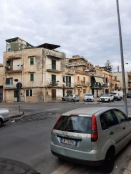

BRANCACCIO |
|
BRANCACCIO |
|
Una delle mete principali del nostro viaggio d’istruzione a Palermo è stata il quartiere popolare di Brancaccio, collocato tra il centro e l’estrema periferia a sud-est della città.
Brancaccio è un quartiere piccolo, povero, ma ospitale. Al nostro arrivo siamo stati accolti dal sorriso, dalla gioia e dalle grida di felicità di un gruppo di bambini che ci salutava allegramente, mentre entravamo nella parrocchia in cui ha operato per trent’anni Padre Pino Puglisi, un sacerdote attento ai bisogni reali delle persone.
Don Gabriele, attuale erede di Don Puglisi, ci ha commosso profondamente quando ha raccontato la testimonianza di vita di Padre Pino Puglisi, nato a Brancaccio il 15 settembre 1937 e ucciso dalla mafia, padrona del quartiere, il giorno del suo 56° compleanno nel 1993.
La sua esperienza è qualcosa di incredibile dal punto di vista umano e di fede: è riuscito a realizzare dei cambiamenti di valori nelle persone in precedenza affascinate dal potere mafioso, a far valere i diritti civili della borgata e a riscattare i ragazzi di strada con l’amore e l’educazione. Il video qui proposto mostra esplicitamente il contesto in cui ha dovuto operare con coraggio Don Pino Puglisi.
Al suo arrivo a Brancaccio Padre Pino Puglisi trova una realtà difficile da gestire: i fratelli Filippo e Giuseppe Graviano, mandanti del suo assassino, sono esponenti di Cosa nostra che controllano le attività illecite del quartiere, dominato dalla povertà e dall’ignoranza.
La mafia si infiltra nell’economia di Brancaccio, nelle istituzioni locali, tra i funzionari pubblici e nelle forze dell'ordine al fine di facilitare le proprie attività illegali senza rischiare pene: i commercianti sono costretti a pagare il “pizzo” per garantire la sicurezza del loro negozio; gli imprenditori edili sono vittime dell’estorsione, condizione necessaria per vedere realizzati i propri progetti; i professionisti sono soggetti a concussioni per ottenere favori; i politici locali sono corrotti o collusi con la mafia e facilitano gli interessi criminali; gli agricoltori sono vittime di ricatti con richieste di pagamenti in cambio della protezione delle loro colture o della sicurezza dei loro terreni. La mafia crea un clima di paura tra la popolazione che finisce per richiedere la “protezione” del potere mafioso; i suoi tentacoli intrappolano qualsiasi attività di Brancaccio, coinvolgendo anche i giovani, facilmente vulnerabili e disposti al traffico di droga e al riciclaggio di denaro sporco pur di soddisfare le proprie necessità economiche.
La personalità di Padre Pino Puglisi vive nelle testimonianze, come dimostrano le parole di chi lo ha conosciuto.
I giovani di Brancaccio, conosciuti come "I Figli del Vento", sono bambini che trascorrono gran parte del loro tempo per le strade, giocando liberamente; respirano l’aria mafiosa che soffoca l’ambiente. La loro esperienza è raccontata nel romanzo “Ciò che inferno non è” di Alessandro D’Avenia. È la storia di alcuni giovani del quartiere Brancaccio a Palermo: Matteo, Luca, Angelica e altri bambini. Sono ragazzi che vivono in un contesto difficile, segnato dalla povertà, dalla criminalità e dalla mancanza di prospettive. Grazie a Padre Pino Puglisi e ai suoi collaboratori, i ragazzi imparano ad affrontare le sfide quotidiane e a realizzare i propri sogni. Il romanzo è un ritratto autentico della dura realtà vissuta da questi ragazzi che con coraggio decidono di cambiare e di farsi strada nella vita. A nostro parere la scelta di questo romanzo è esemplare per riflettere su ciò che abbiamo cercato di raccontare con la nostra ricerca e con i nostri video.
La morte di Padre Pino Puglisi non ha interrotto il progetto di trasformazione di Brancaccio, da lui intrapreso. Ancora oggi sono molti gli attivisti che promuovono la cultura della legalità, contrastano il crimine e diffondono la condanna della mafia. Oggi Brancaccio continua a combattere la criminalità con azioni coraggiose di prevenzione, educazione, legalità e resilienza. Il ricordo di Padre Puglisi è ancora vivo ed è servito a puntare i riflettori sul problema dalla mafia in Italia.
Il contatto con la realtà di Brancaccio ci ha permesso di allargare i nostri orizzonti: molti bambini non hanno la fortuna di nascere e di vivere in un ambiente sano e tranquillo, di godere di un'infanzia serena, ma sono costretti a crescere troppo in fretta, a diventare adulti in un ambiente corrotto, crudele, privo di diritti fondamentali e di libertà.
Per i ragazzi di strada la vita è una continua lotta per soddisfare i bisogni fondamentali. Padre Pino Puglisi ha dedicato la sua vita al recupero dei ragazzi di strada, ha lottato contro la criminalità organizzata con coraggio per dare un senso alla loro vita, per far conoscere l’altra faccia della medaglia basata sull’amore, sulla fiducia, sulla fraternità, sull’impegno, sulla collaborazione e sulla gioia di vivere liberamente senza paure. Ha concretizzato questo atto d’amore con la fondazione del Centro di accoglienza Padre Nostro che ha salvato e continua a salvare ancora oggi tanti ragazzi dalla malavita.
La storia di questo sacerdote non è la storia di un eroe, ma di un vero uomo che con il suo carisma sacrifica la sua vita per donarla agli altri e assicurare loro un futuro migliore.
Ci ha colpito il sorriso che Padre Pino Puglisi ha rivolto al suo assassino: la sua frase “Me l’aspettavo”, pronunciata prima di essere ucciso con un colpo di pistola alla nuca, dimostra che siamo davanti a un uomo che non considera il suo sacrificio inutile, ma lascia trapelare che il suo esempio sarà preso come modello da chi l’ha amato e apprezzato. Le numerose testimonianze dei ragazzi che hanno cambiato vita dimostrano la loro gratitudine a quest’uomo.